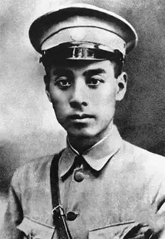
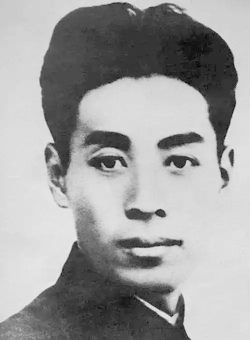
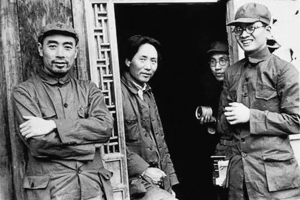
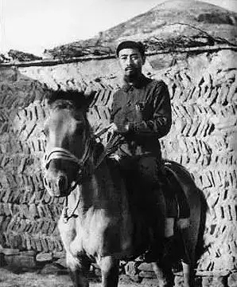
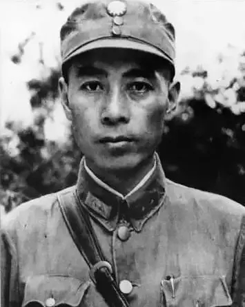
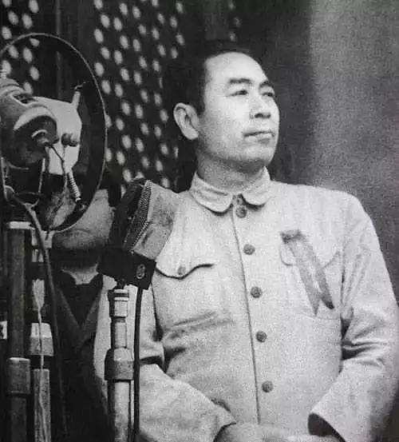
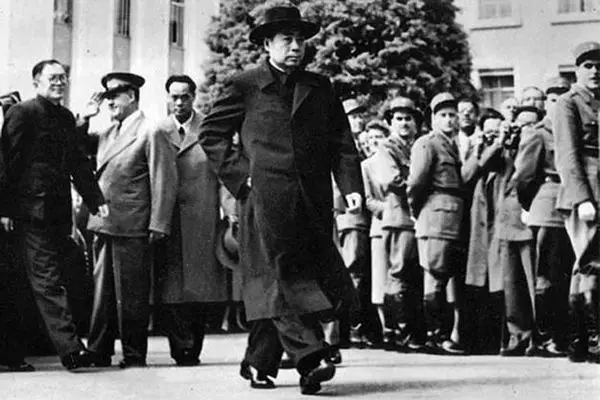
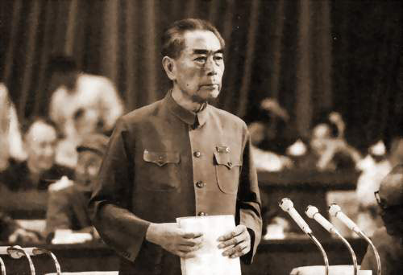

 |
1924年秋回国，在国共合作期间任广东黄埔军校政治部主任，国民革命军第一军政治部主任、第一军副党代表等职，并先后任中共广东区委员会委员长、常务委员兼军事部长，两次参加讨伐军阀陈炯明的东征，创建了行之有效的军队政治工作制度。1927年3月在北伐的国民革命军临近上海的情况下，领导上海工人第三次武装起义，赶走了驻守上海的北洋军阀部队。同年5月在中共第五次全国代表大会上当选为中央委员，在中共五届一中全会上当选为中央政治局委员。7月12日中共中央改组，他任中共中央政治局临时常务委员会委员。国共合作全面破裂后，和贺龙、叶挺、朱德、刘伯承等一起于8月1日在江西南昌领导武装起义，任中共前敌委员会书记。1928年在中共六届一中全会上当选为中央政治局常务委员。后任中央组织部长、中央军委书记。为保证中共中央在上海秘密工作的安全，为联系和指导各地区共产党领导的武装斗争，为发展在国民党统治区的秘密工作，起到了重要作用。在这一阶段的大部分时间内，他实际上是中共中央的主要主持者。 |
|  | 1931年12月，离开上海到中央革命根据地，先后任中央苏区中央局书记、中国工农红军总政治委员兼第一方面军总政治委员、中央革命军事委员会副主席。1933年春和朱德一起领导和指挥红军战胜了国民党军队对中央革命根据地的第四次“围剿”。1934年10月参加长征。1935年1月在贵州遵义举行的中共中央政治局扩大会议上，支持毛泽东的正确主张，对实际确立以毛泽东为代表的新的中央的正确领导，起了关键性的作用，并继续被选为中央主要军事领导人之一。1936年12月张学良和杨虎成发动武力拘禁蒋介石的“西安事变”后，任中共全权代表与秦邦宪、叶剑英等去西安同蒋介石谈判，和张、杨一起迫使蒋介石接受“停止内战、一致抗日”的主张，促使团结抗日局面的形成 |
|  | 抗日战争时期，他代表中共长期在重庆及国民党控制的其他地区做统一战线工作，努力团结各方面主张抗日救国的力量，并先后领导中共中央长江局、南方局的工作。他坚持国共合作，积极团结民主党派、进步知识分子、爱国人士和国际友好人士，制止反共逆流，克服对日投降的危险。在1945年的中共七届一中全会上当选为中央政治局委员、中央书记处书记，和毛泽东、朱德、刘少奇、任弼时组成了以毛泽东为首的中共中央书记处。抗日战争胜利后，为制止内战率中共代表团同国民党谈判，并领导了国民党统治区内党的工作、军事工作和统一战线工作。1946年后，任中共中央军委副主席兼代总参谋长，协助毛泽东组织和指挥解放战争，同时指导国民党统治区的革命运动 |
|  | 1949年10月1日开国大典，天安门城楼上所有人都穿着庄重笔挺的礼服，唯注重仪表的周恩来穿着一件旧卡其布中山装。忙于政治协商会议工作的他，已经四天四夜没合眼。 中华人民共和国成立后，周恩来一直任政府总理，1949～1958年曾兼任外交部长；当选为中共第八、九、十届中央政治局常委，第八、十届中央副主席，中央军委副主席；政协全国委员会第一届副主席，第二、三、四届主席。担负着处理党和国家日常工作的繁重任务。1949～1952年他成功地组织领导了国民经济的恢复工作，到1952年底，全国工农业总产值均达到历史的最高水平。1953～1957年“一五”计划期间，他领导了以156个建设项目为中心的工业建设，为中国工业化奠定了初步基础。1954年他提出建设现代工业、农业、交通运输业和国防的四化目标，组织制定了《1956年至1967年科学发展规划》，推动了国家科技事业的迅速发展。1961～1965年为纠正“大跃进”带来的失误，扭转经济困难局面，他和刘少奇、邓小平领导了国民经济的调整工作，使国民经济逐步得到恢复和发展。他强调建成社会主义强国，关键在于实现科学技术现代化，主张经济建设必须实事求是，从中国的实际出发，积极稳妥，综合平衡。他特别关注水利建设和国防科技事业发展，并为此做出了巨大贡献。他对社会主义时期的统一战线工作、知识分子工作、文化工作和人民军队的现代化建设也给予特殊的关注，指导这些工作取得了重要成绩。 |
|  |
他参与制定和亲自执行重大的外交决策。1950年朝鲜战争爆发，他协助毛泽东指挥中国人民志愿军作战，并担负了后勤保障的组织工作，领导了中国代表团的停战谈判。1954年率中国代表团参加日内瓦会议，经过谈判达成协议，使越南（除南方外）、老挝、柬埔寨三国的独立获得国际承认。他代表中国政府提出作为国与国关系准则的和平共处五项原则，1955年在万隆会议上主张和平共处，反对殖民主义，提倡求同存异、协商一致，使中国独立自主的和平外交政策得到积极贯彻。他先后访问过亚洲、非洲、欧洲几十个国家，接待过大量来自世界各国的领导人和友好人士，为增进中国人民与世界人民的友谊，扩大中国的国际影响做出了重要贡献 |
|  | “文化大革命”期间，他在非常困难的处境中，为尽量减少“文化大革命”所造成的损失，使党和国家还能进行许多必要的工作，勉力维持国民经济建设；为保护大批领导干部和民主人士，恢复和落实党和国家的政策，作了坚持不懈的努力。他同林彪、江青集团进行了各种形式的斗争，在挫败林彪、江青集团种种分裂和夺权阴谋活动中，起到了控制和稳定局势的重要作用。他为开拓外交新局面，实现中美缓和、中日关系正常化和恢复中国在联合国的席位，做出了卓越贡献。 |
1972年他被诊断出患有膀胱癌后，仍然坚持工作。在1975年的第四届全国人民代表大会第一次会议上，代表中国共产党重新提出在中国实现工业、农业、国防和科学技术现代化的目标，鼓舞了人民战胜困难的信心。1976年1月8日在北京逝世。他的逝世受到极广泛的悼念。由于他一贯勤奋工作，严于律己，关心群众，被称为“人民的好总理”。